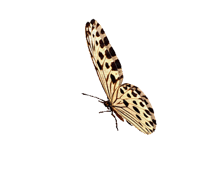

Alimentando borboletas na natureza
- Dê néctar de flores para elas. O alimento natural delas é o néctar de diferentes tipos de flores. Portanto, essa é a melhor opção. As asclepias, zínias e tagetes são muito procuradas pelas borboletas – plante algumas dessas em seu jardim e você as atrairá!
- Uma alternativa é o néctar de fruta industrializado. Se você não quer ou não tem tempo para cuidar de flores, compre néctar de frutas em caixinha. Coloque um pouco em uma garrafa de plástico ou encharque um tecido com o líquido e deixe-o em um comedouro de borboletas. Se você não tiver um comedouro, coloque o alimento no parapeito da varanda ou em algum lugar como esse.
- Se você não tiver néctar, dê água com açúcar. Nesse caso, o açúcar pode substituir o néctar. Misture 1 parte de açúcar de mesa comum a 4 partes de água morna e mexa bem. O alimento será suficiente para dar nutrição e energia às borboletas.
- Alimente as borboletas com frutas podres. Corte alguns pedaços de frutas podres, ou muito maduras, quase estragando, e dê para as borboletas. As favoritas delas são uva, laranja, morango, pêssego, nectarina, maçã e banana. Acrescente um pouquinho de água ou suco de fruta para umedecer o alimento.
- Faça um comedouro para as borboletas. A melhor maneira de alimentá-las no habitat delas é disponibilizando um comedouro. Há várias maneiras de se fazer um. Pendure uma garrafa plástica com alimentos em uma árvore ou coloque um prato raso sobre alguma base no jardim. Seja criativo e faça um comedouro vistoso para atrair o máximo possível de borboletas.

5 Espécies de Borboletas:
Ciclo de vida da Borboleta
| Ovos | Larvas | Crisálida | Imagos |
|---|---|---|---|
| Eventualmente eclodem. | Sua função principal é alimentar e reunir nutrientes suficientes. | É o nível necessário para passar por um estágio de mudanças profundas. | A metamorfose se completa, o inseto adulto emerge da crisálida quebrando sua casca. |
| Liberando uma única lagarta de cada um. | Processo de metamorfose que leva à idade adulta | Este estágio também é conhecido como “pupa". | A borboleta muda radicalmente seus hábitos e modos de abastecimento. |
